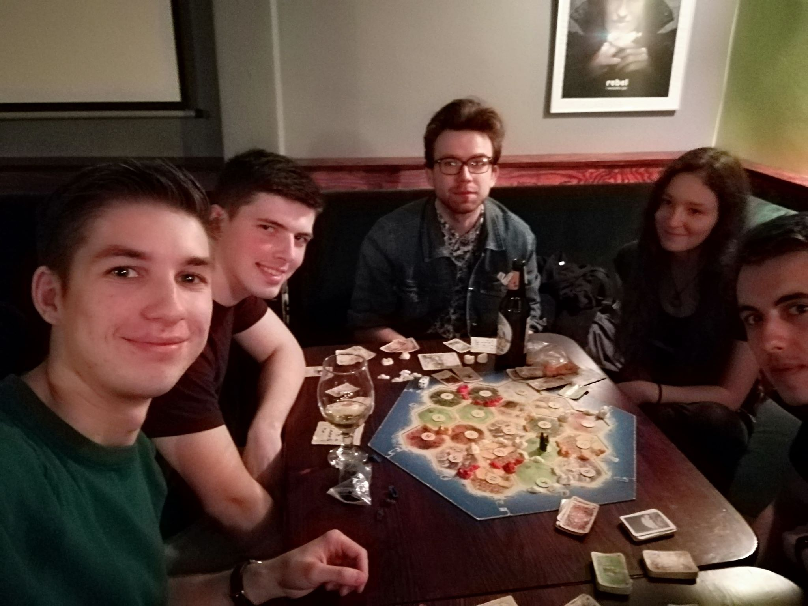

W ubiegły poniedziałek odbyło się pierwsze w historii spotkanie KNIS.
Omówiliśmy na nim plany na najbliższy rok, wymieniliśmy się pomysłami na projekty, a także dokonaliśmy wyboru wiceprezesa. Zapowiedziany został także cykl wykładów z machine learningu prowadzonych przez naszego prezesa - Aleksandra Obuchowskiego.
Termin pierwszego wykładu ogłosimy już wkrótce. Już teraz zapraszamy serdecznie!Oprócz wykładów nasze koło prowadzić będzie projekty naukowe. Już w trakcie spotkania utworzyły się pierwsze grupy projektowe. Chcesz poznać szczegóły albo masz ciekawy pomysł(nudnych nie realizujemy), napisz do nas!
Po spotkaniu poszliśmy wspólnie na planszówki, zobaczcie na zdjęciu poniżej, jak było fajnie! Chcesz dołączyć do koła? Napisz do nas na Facebooku.